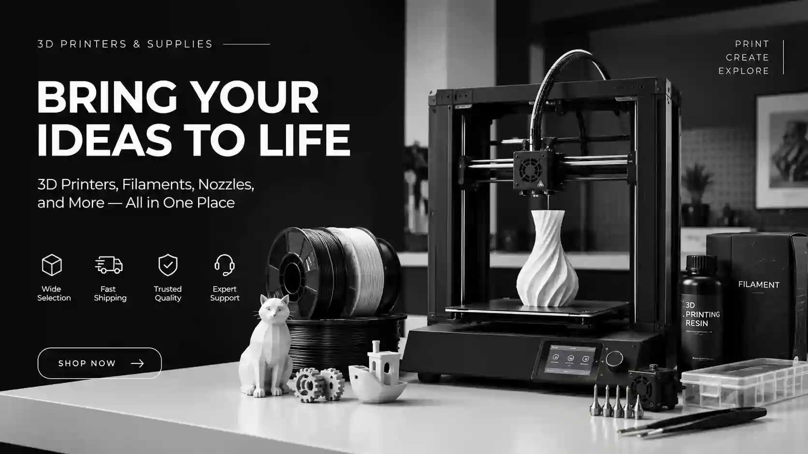

Notes from the print bed.
Practical writing on materials, slicing strategy, and finishing. No fluff, no gatekeeping.
3D Printed Christmas Gifts People Actually Keep
The best printed gifts share three properties: they finish in one evening, they survive wrapping paper, and they look intentional rather than "printed". Here is the strategy, not just a list.
GUIDE3D Printing Software, Explained: Modeling, Repair and Slicing
The software side of 3D printing looks like a wall of acronyms, but it collapses into three stages: make the shape, fix the shape, cut the shape. Learn one tool per stage and you are set for years.
GUIDEBed Adhesion: Fixing the First Layer for Good
When a print fails at minute three, the diagnosis is almost always the same: the first layer did not bond. The culprit list is short, and so are the fixes.
GUIDEDesk Setup Upgrades You Can Print This Week
A desk is a grid of small problems: the phone lying flat, the pens migrating, the cup leaving rings, the cables breeding behind the monitor. Every one of those problems is a three-hour print away from solved.
GUIDEEaster Crafts to Print With Kids
Easter is the easiest holiday to turn into a printing craft session, because everything about it is small, chunky and forgiving. The printer does the hard part; the kids do the fun part.
GUIDEFDM vs Resin: Which Printer Should Come First?
Two technologies, one decision. FDM melts plastic filament; resin cures liquid with UV light. They overlap less than marketing suggests, and the right first choice depends entirely on what you want to make.
GUIDEHalloween Props You Can Print This Weekend
Great Halloween printing is about restraint: one or two well-made pieces beat a table of plastic-looking clutter. This weekend plan uses one printer, one near-black spool, and one glowing accent.
GUIDEHow to Paint 3D Prints So They Stop Looking Printed
Fifteen minutes of finishing separates "3D printed object" from "thing I bought". The ritual is the same for a figurine, a planter or a gothic brush holder — and it is shorter than you fear.
GUIDEHow to Prepare a 3D Model for Printing: A Step-by-Step Checklist
Most failed prints are not slicer problems — they are model problems that only show up at the nozzle. Run any file through this checklist, in this order, and the success rate jumps immediately.
GUIDEHow to Store Filament So It Never Ruins a Print
Damp filament is the ghost in the machine: it causes stringy prints, popping noises and weak walls that everyone first blames on settings. The fix costs less than one spool and takes ten minutes.
GUIDEMulticolor Printing Without an AMS
Multi-material units are lovely and optional. A single-extruder printer can produce genuinely colorful prints with three techniques that cost nothing but planning.
GUIDEPLA, PETG or ABS: A No-Drama Filament Guide
Three spools dominate every filament shelf, and choosing wrong costs more in failed prints than the price difference ever saves. Here is the honest version.
GUIDEPrint-in-Place, Explained: Why Articulated Toys Need No Assembly
Print-in-place is the party trick of 3D printing: a jointed dragon comes off the bed already flexing, no glue, no hinges, no assembly. The magic is not magic — it is clearance, carefully modeled.
GUIDEPrint Speed vs Quality: When Fast Is Actually Fine
Speed is the most misunderstood dial in 3D printing. Faster is not worse and slower is not better — each model simply has a point where speeding up stops being free.
GUIDESafe 3D Printing at Home: Ventilation, Hotends and LEDs
Consumer 3D printing is a home-safe hobby with three honest hazards: fumes, heat, and fires-that-start-with-candles. All three have boring, effective fixes.
GUIDEThe Only Slicer Settings That Really Matter
Slicers expose two hundred settings so that you can safely ignore one hundred ninety of them. These are the ones that change prints; everything else is decoration until you have a specific reason.
GUIDEStringing and Warping: A Practical Troubleshooting Guide
Two failure modes cause most ugly prints, and each has a surprisingly short culprit list. Match the symptom, apply one fix, reprint. No ritual sacrifices required.
GUIDESupports: When You Need Them and How to Make Them Disappear
Supports are not a default — they are a decision. Print them when the geometry demands it, skip them when it does not, and both your filament bill and your cleanup time drop.
GUIDEValentine's Gifts Worth Printing
Printed gifts win on one axis that stores cannot touch: specificity. A rose printed in her favorite color beats a generic bouquet, and it costs one print session instead of a florist markup.
GUIDEYour First Week of 3D Printing: A Practical Plan
The first week decides whether a printer becomes a hobby or a coat rack. This plan trades random printing for a deliberate ladder: each day builds one skill, and every print is useful enough to keep.
